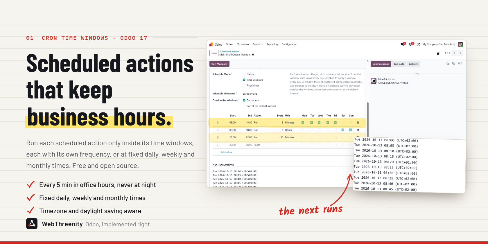
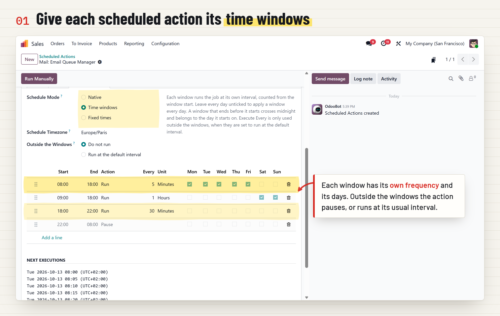
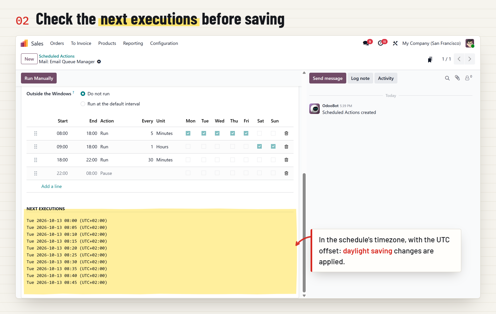
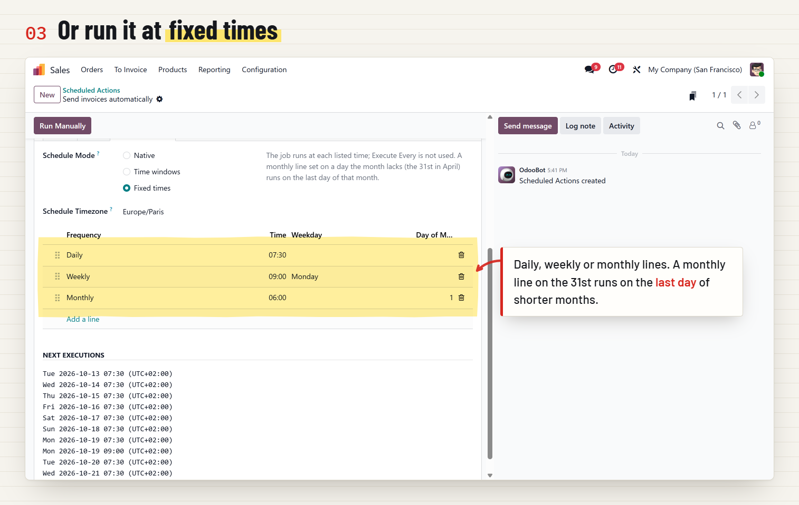
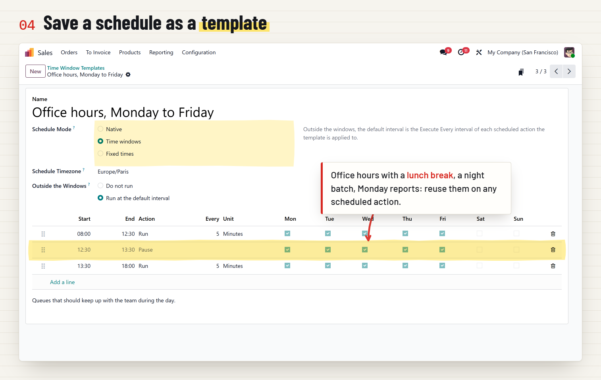
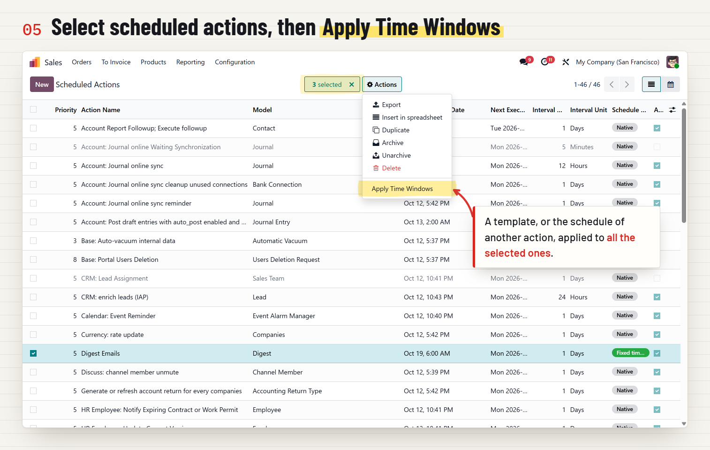
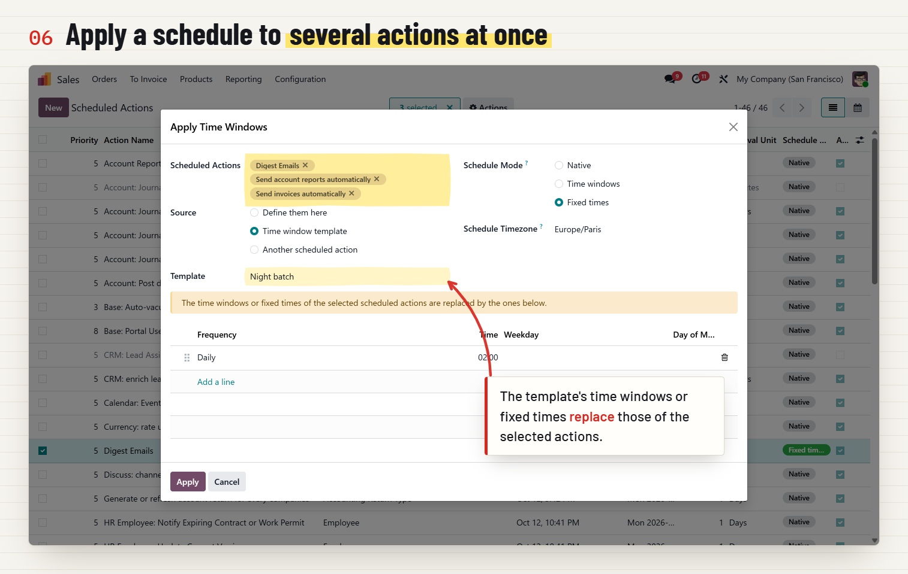
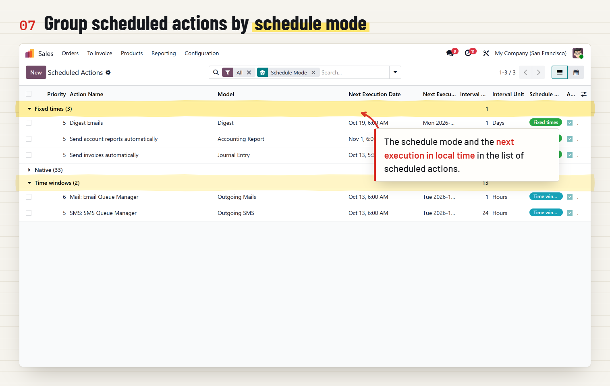

WebThreenity · Odoo 17 · Free and open source
Business hours and fixed times for every scheduled action.
Tell each scheduled action when it may run: every 5 minutes during office hours, every 30 minutes in the evening, never at night. Or run it at fixed times: every day at 07:30, every Monday at 09:00, on the 1st of the month.

Captured on Odoo 19 Enterprise with the standard demo data. Odoo 17 shows the same screens and steps, with its own look.







A queue that polls every 5 minutes all night fills the logs and wakes the server for nothing. Pause it outside business hours.
A report at 07:30, a Monday digest, an export on the 1st: fixed times, not an interval that drifts a little more every day.
Every scheduled action stays on Odoo's native scheduling until you change it. The core actions are never touched.
Each window runs the action at its own interval, in minutes or hours, or pauses it. Runs are aligned on the window start (08:00, 08:05, 08:10...), so the rhythm never drifts.
Daily, weekly or monthly times, as many as you need. An action set on the 31st runs on the last day of shorter months.
Limit a window to some weekdays, or let it cross midnight: a Friday 22:00-06:00 window covers Friday night until Saturday morning.
Windows follow the wall clock of the timezone you choose, across summer time changes. The next execution is still stored in UTC.
The form lists the next executions as you edit, and explains what is wrong when two windows overlap or the action would never run.
Save reusable templates, then select scheduled actions in the list and apply a template, the schedule of another action, or one you define on the spot.
No. Every scheduled action stays on Native until you choose Time windows or Fixed times for it: the mail queue, the autovacuum and the other core actions keep their usual schedule.
No. The scheduled action itself keeps running; only its next execution date is computed differently, and the minute-level precision of the scheduler is kept.
Windows follow the wall clock of the chosen timezone: 08:00 stays 08:00 in summer and in winter. The preview shows the UTC offset of each run.
It crosses midnight and belongs to the day it starts on: a Friday 22:00-06:00 window runs from Friday night to Saturday morning.
Yes. Run Manually always runs, whatever the windows say.
Yes, under the LGPL-3 license.
Made by WebThreenity
WebThreenity implements, customizes and supports Odoo: ERP rollouts, custom modules, version upgrades and integrations. Questions about this app or a custom request? Write to us.
Email WebThreenity or visit webthreenity.netlify.app